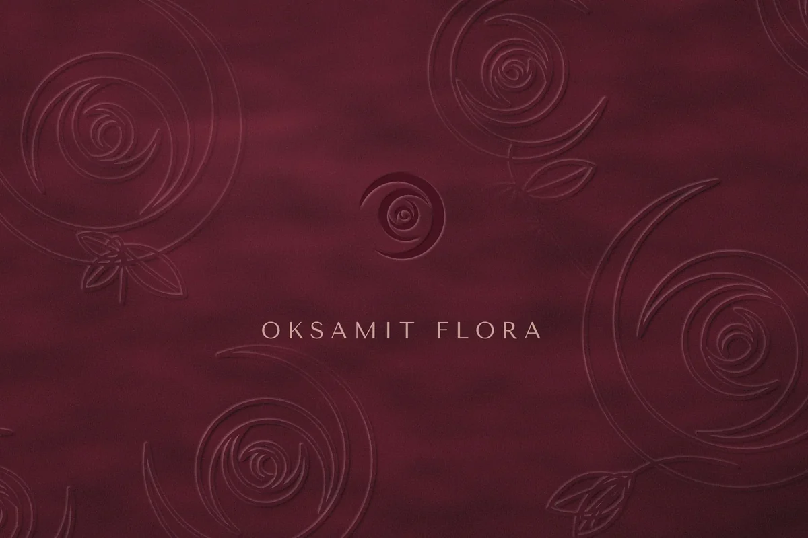
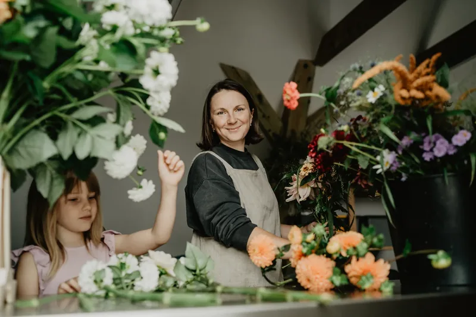
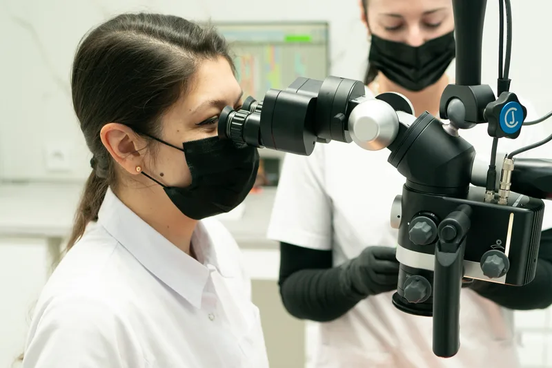
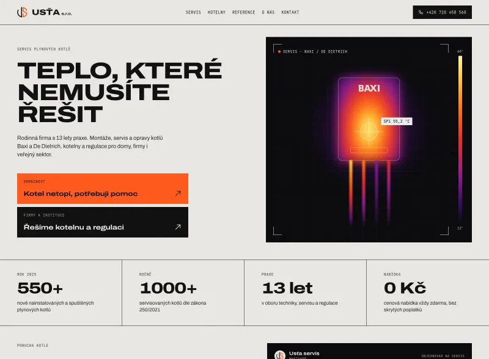
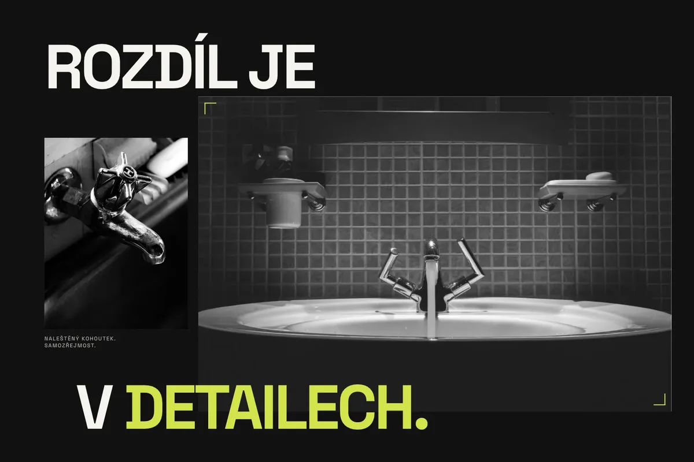
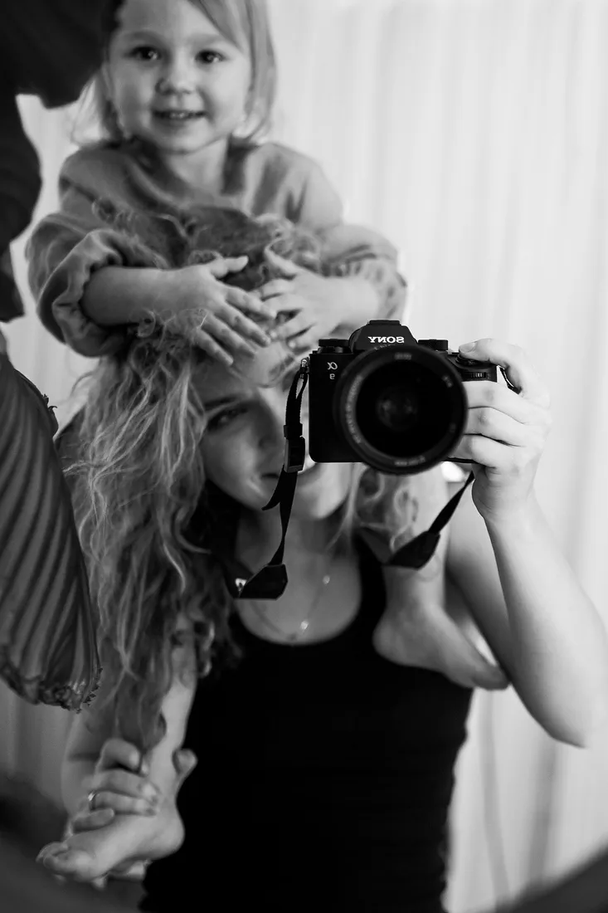

Open to new roles · Brno, hybrid or remote
Graphic designer, photographer & videographer.
12 years behind the camera and a designer’s hand for everything around it: brand identities, social media, print and websites. I work with AI tools every day and take every project from the first idea to the final file myself.
What I do
-
Brand & graphic
Logos and visual identities, typography, print, banners and event visuals, and the social media content that keeps a brand alive after launch.
-
Photo & video
Brand, people and portrait photography with my own post‑production, and story-driven video from the shoot to the final cut for each format.
-
Web & UX
Websites designed in Figma, then built and deployed by me, tested on desktop and mobile.
Selected work
Client work and own projects
A logo that opens like a rose.
A farm told through its people, for Sonnentor. Clothes made to move in, three shoots since 2024. A heating engineer people are happy to call.
A heating engineer people are happy to call.

The faces behind the mask.
A boiler service, seen through a thermal camera.
A cleaning company that doesn’t look like one.Photography · since 2014
12 years of photographing people.
Portraits, families and brand shoots under my own name, Inna Guba Foto&Video. More photos and films are on my photo website.
Visit innaguba.com ↗About

I’m Inna. I notice what people need before they say it, and turn it into design, content and results.
I started in banking, where I spent four years in sales, client care and loan paperwork under tight deadlines. Since 2014 I have run my own photo and video brand, and over the last years I have added brand identities, graphics for social media and print, marketing for a dental clinic and websites.
I like owning a project end to end: the idea, the shoot, the design, the words and the final file. AI tools are part of my everyday work, from images and video to copy and code.
- Brand & graphics
- Illustrator, Photoshop, Figma · identity, typography, social media, print
- Photo, video & motion
- Lightroom, Photoshop, Premiere Pro, DaVinci Resolve, After Effects, CapCut
- Content & marketing
- Meta Business Suite, Canva · copywriting, social media, brand building
- AI tools
- Claude, Claude Code, ChatGPT, Gemini, Midjourney, Runway, Higgsfield
- Web & UX/UI
- Figma, Webflow, GitHub · prototypes, responsive design, I deploy my own sites
- Languages
- Czech, English, Ukrainian, Russian
- Based in
- Brno, Czech Republic · hybrid or remote
Contact
innaguba@seznam.cz+420 774 547 333 · Photo website · LinkedIn · Behance · GitHub · CV
Open to design roles in Brno, hybrid or remote.